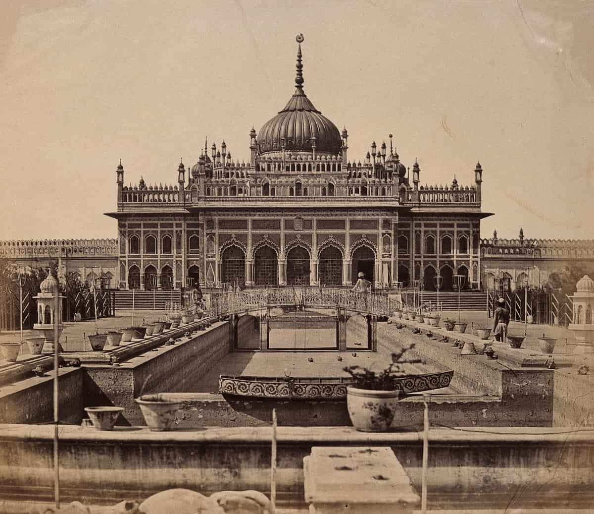

Lucknow was Also known as Lakhanapuri as it is be Our god gifted this land to his brother Lakhana and also know as the city of Nawabs/Nabobs
It also had various royal and legendary structure constructions from the very past.
